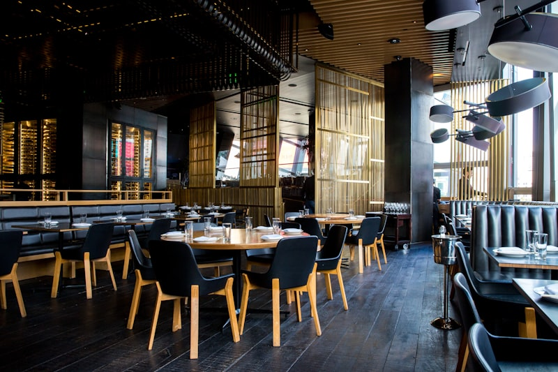

1968
Intel Founded

Robert Noyce and Gordon Moore rename the newly formed company
NM Electronics to Intel Corporation, laying the foundation for
decades of technological innovation.
Learn more
1971
First Microprocessor

Intel debuts the 4004, the world's first commercial microprocessor,
igniting the microprocessor revolution and propelling the future
of computing devices.
Learn more
1978
8086 Processor

Launch of the 8086 processor, establishing the x86 architecture
that drives countless PCs and servers in the modern era.
Learn more
1985
386 Processor

Intel introduces the 386 processor with 32-bit architecture,
ushering in a new era of performance and multitasking for
personal computers.
Learn more
2006
Peak GHG Emissions

This year marks Intel's highest annual greenhouse gas emissions
for operations. Over subsequent years, Intel invests heavily in
chemical abatement, renewable energy, and energy-efficient
manufacturing to reverse this trend.
Learn more
2020
RISE Strategy

Intel launches its RISE (Responsible, Inclusive, Sustainable,
Enabling) strategy and 2030 goals, aiming to drive industry-wide
progress on climate action, water stewardship, and waste reduction.
Learn more
2022
Net-Zero By 2040

Intel announces its commitment to achieve net-zero greenhouse
gas emissions (Scope 1 and 2) across its global operations
by 2040, building on years of environmental initiatives.
Learn more
2023
Renewable Electricity

The company achieves 99% renewable electricity usage worldwide,
helping to drastically lower carbon emissions and driving progress
toward Intel's long-term sustainability goals.
Learn more
2024
Sustainability Summit

Intel hosts its first Sustainability Summit, uniting suppliers,
government officials, and industry leaders to collaborate on
next-generation sustainable semiconductor manufacturing.
Learn more